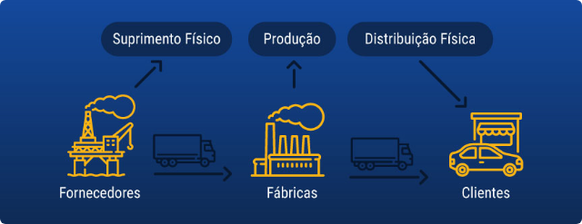
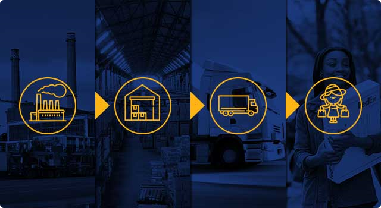

Logística internacional: Distribuição física (nível 1)
Professor: Gustavo L. / Abril de 2019
Olá! Você quer saber mais sobre a Distribuição Física na Logística? Assista ao vídeo a seguir.
Uma organização pode ser divida em três processos principais: suprimentos, produção e distribuição.
Onde termina o processo de distribuição de uma empresa, inicia o processo de suprimentos da empresa seguinte.
Desde o momento em que a produção é concluída até o momento em que o consumidor recebe o produto, tomando posse do mesmo, os produtos são de responsabilidade da logística, a qual deve mantê-los armazenados na empresa e, então transportá-los para o distribuidor ou diretamente ao consumidor.
O processo mais comum de distribuição é quando a empresa entrega o produto final para o distribuidor, que por sua vez vende o produto para um varejista e em seguida aos consumidores finais.
Nesse contexto, existe uma série de variáveis e decisões a serem tomadas pelo profissional de logística.
Segundo Novaes (2004), o objetivo geral da distribuição física, como meta ideal, é o de levar os produtos certos para os lugares certos, no momento certo e com o nível de serviço desejado pelo menor custo possível.
Essa condição gera certo antagonismo, pois garantir um nível de serviço elevado, simultaneamente com a pretensão de redução dos custos, implica em possíveis melhorias do sistema, o que reflete em maiores custos de transporte, de armazenagem e de estoque.
Quando os clientes adquirem produtos em quantidade suficiente para ocupar um veículo inteiro, as entregas são realizadas diretamente a partir dos vendedores, dos estoques da fábrica ou da linha de produção.
Isso implica em fretes menores quando as cargas são completas, seguindo para uma localidade, gerando, portanto, um menor custo total de transporte.
Entretanto, a distribuição está associada também à entrega de cargas fracionadas. Nesse tipo de entrega o produto é entregue em mais de um destinatário, aproveitando a viagem e os custos envolvidos.
As entregas, nesse caso, devem ser muito bem planejadas, pois a entrega unitizada tem um menor custo total e menor lead time, as entregas fracionadas devem ser utilizadas somente quando não for possível a entrega direta com o veículo completamente ocupado. Segundo Ballou (2000), a representação da distribuição física apenas como a escolha de uma das alternativas básicas citadas anteriormente é muito simplista.
Existem considerações adicionais, tais como:
Qual serviço de transportes deve ser utilizado para movimentar os produtos a partir da fábrica? E a partir do armazém?
Quais procedimentos de controle devem ser empregados para os itens de inventário (estoque)?
Onde devem localizar-se os depósitos, quais dimensões devem ter e quantos armazéns são necessários?
Próxima Aula